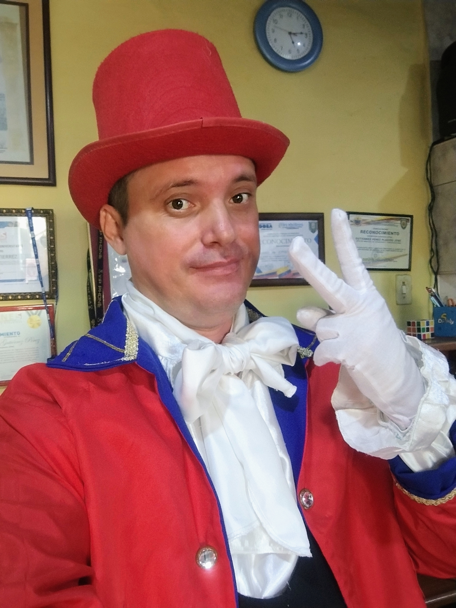

¡Hola! Bienvenidos a mi rincón digital
Detrás de las pantallas y las historias
Mi nombre es Placido. Soy un apasionado profesor de Informática y de las Tecnologías de la Información y la Comunicación (TIC), además de estudiante de Informática en la UPEL. Mi día a día transcurre entre el desarrollo de soluciones lógicas, la pedagogía y la producción de espacios radiales y podcasts donde la palabra toma vida.
Lecturitas nace de la hermosa unión entre dos de mis grandes pasiones: la tecnología web y la enseñanza. Como programador enfocado en soluciones limpias mediante HTML, CSS, JavaScript y JSON, siempre busco crear herramientas que funcionen de manera fluida, ligera y directa desde cualquier navegador, sin complicaciones técnicas para el usuario.

🎯 El Propósito del Proyecto
Este espacio fue diseñado con mucho cariño para los más pequeños de la casa. El objetivo es ofrecer un entorno dinámico, intuitivo y atractivo donde las fábulas tradicionales, los poemas rítmicos y las aventuras cobren un sentido interactivo a través de recursos multimedia, facilitando así el amor por la lectura desde la infancia.
Cuando no estoy escribiendo código para optimizar un sistema o planificando una clase, disfruto plasmar historias a través del audio en proyectos de comunicación y radio. Considero que tanto el desarrollo de software como la educación son artes dedicados a construir puentes, y este rincón interactivo es mi granito de arena para conectar a los niños con mundos mágicos.
¡Gracias por visitar Lecturitas y ser parte de esta aventura lectora! 🚀